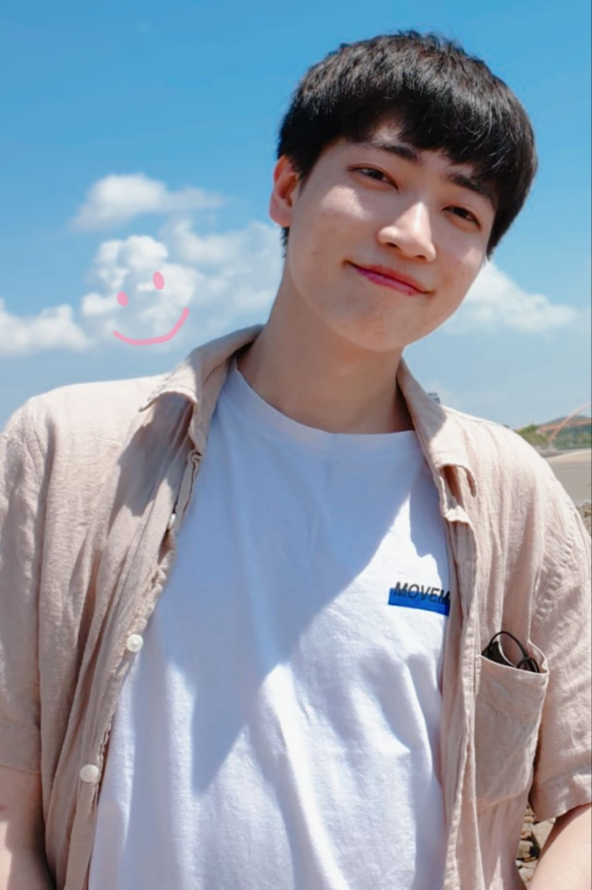

개발자,
언론사에 들어가다!
사용자(User)가 아닌 독자(Reader)를 위한 개발
The Alpha - 임희래 ND
"안녕하세요, 디 프런티어센터 디 알파팀 임희래 ND입니다."
- 한국 언론의 퀄리티 저널리즘을 디지털로 진화시키는 전진기지 역할을 하기 위해 신설된 조직
- '히어로콘텐츠'와 같은 멀티미디어 스토리텔링, 데이터 저널리즘을 기반으로 한 전략 콘텐츠를 제작
- Newsroom Developer의 약자로, 뉴스 웹 페이지를 개발하는 업무를 맡고 있음.
Hero Contents - 사람들의 기억에 남기 위하여
Cooperation - 개발자가 언론사에서 협업하기 위해
레퍼런스